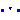
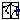
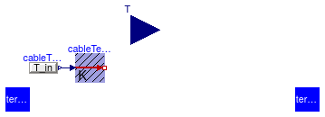
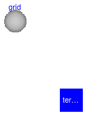
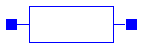
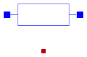

Package that contains partial models for lines and cables
Extends from Modelica.Icons.BasesPackage (Icon for packages containing base classes).
| Name | Description |
|---|---|
| PartialBaseLine | Partial cable line dispersion model |
|  PartialLine | Partial cable line dispersion model |
|  PartialNetwork | Partial model that represent an electric network |
| Partial model of an inductive element that links two electrical connectors | |
| Partial model of an RLC element that links two electrical connectors | |
| Partial model of a resistive element that links two electrical connectors | |
| Record that contains the properties of a generic cable |
Partial cable line dispersion model

This partial model contains parameters and variables needed to parametrize a generic cable. The resistance, inductance and capacitance are computed by the functions associated to the type of cable selected. The type of cable is specified using a record that inherits from Buildings.Electrical.Transmission.BaseClasses.BaseCable such as ( Buildings.Electrical.Transmission.LowVoltageCables.Generic or Buildings.Electrical.Transmission.MediumVoltageCables.Generic). The record contains functions that depending on the properties of cable compute its resistance, inductance or capacitance.
The model has two parameters use_C and modelMode that
change the behaviour of the model. It is possible to include the effects
of a capacity or select the model to be dynamic or steady state. More information
are available in the line models that extends this partial model.
If mode = commercial, the user can select the type of cable from a list
of commercial cables. The cables are divided in three different categories:
The details and type of cables can be found in Buildings.Electrical.Transmission.LowVoltageCables and Buildings.Electrical.Transmission.MediumVoltageCables.
If mode = automatic, the type of cable is automatically selected
depending on the value of the parameters V_nominal and
P_nominal.
More details about the functions that compute the type of cable and its properties can be found in Buildings.Electrical.Transmission.Functions.
The parameter commercialCable is assumed to be
Buildings.Electrical.Transmission.LowVoltageCables.Generic.
The parameter is replaceable so it can be redeclared using a different type, for example
Buildings.Electrical.Transmission.MediumVoltageCables.Generic.
The example models
Buildings.Electrical.AC.ThreePhasesBalanced.Lines.Examples.AClineMedium and
Buildings.Electrical.AC.ThreePhasesBalanced.Lines.Examples.ACSimpleGridMedium
show how this can be done.
| Type | Name | Default | Description |
|---|---|---|---|
| Length | l | Length of the line [m] | |
| Power | P_nominal | Nominal power of the line [W] | |
| Voltage | V_nominal | Nominal voltage of the line [V] | |
| Model | |||
| Assumptions | |||
| Boolean | use_C | false | Set to true to add a capacitance in the center of the line |
| Load | modelMode | Buildings.Electrical.Types.L... | Select between steady state and dynamic model |
| Thermal | |||
| Boolean | use_T | false | If true, enables the input for the temperature of the cable |
| Temperature | TCable | T_ref | Fixed temperature of the cable [K] |
| Tech. specification | |||
| Auto/Manual mode | |||
| CableMode | mode | Buildings.Electrical.Types.C... | Select if choosing the cable automatically or between a list of commercial options |
| Manual mode | |||
| Generic | commercialCable | redeclare parameter Building... | Commercial cables options |
| Type | Name | Description |
|---|---|---|
| input RealInput | T | Temperature of the cable |
Partial cable line dispersion model

This partial model extends the model Buildings.Electrical.Transmission.Base.PartialBaseLine. It adds two generalized electric connectors.
See Buildings.Electrical.Transmission.Base.PartialBaseLine for more information.
Extends from Buildings.Electrical.Interfaces.PartialTwoPort (Model of a generic two port component with phase systems), Buildings.Electrical.Transmission.BaseClasses.PartialBaseLine (Partial cable line dispersion model).
| Type | Name | Default | Description |
|---|---|---|---|
| replaceable package PhaseSystem_p | PartialPhaseSystem | Phase system of terminal p | |
| replaceable package PhaseSystem_n | PartialPhaseSystem | Phase system of terminal n | |
| Terminal | terminal_n | redeclare replaceable Buildi... | Electric terminal side p |
| Terminal | terminal_p | redeclare replaceable Buildi... | Electric terminal side n |
| Length | l | Length of the line [m] | |
| Power | P_nominal | Nominal power of the line [W] | |
| Voltage | V_nominal | Nominal voltage of the line [V] | |
| Model | |||
| Assumptions | |||
| Boolean | use_C | false | Set to true to add a capacitance in the center of the line |
| Load | modelMode | Buildings.Electrical.Types.L... | Select between steady state and dynamic model |
| Thermal | |||
| Boolean | use_T | false | If true, enables the input for the temperature of the cable |
| Temperature | TCable | T_ref | Fixed temperature of the cable [K] |
| Tech. specification | |||
| Auto/Manual mode | |||
| CableMode | mode | Buildings.Electrical.Types.C... | Select if choosing the cable automatically or between a list of commercial options |
| Manual mode | |||
| Generic | commercialCable | redeclare parameter Building... | Commercial cables options |
| Type | Name | Description |
|---|---|---|
| Terminal | terminal_n | Electric terminal side p |
| Terminal | terminal_p | Electric terminal side n |
| input RealInput | T | Temperature of the cable |
Partial model that represent an electric network

This partial model represents a generalized electrical network.
The model has three main components. The parameter grid declares the type
Buildings.Electrical.Transmission.Grids.PartialGrid
that contains the information about the topology of the network, such as
the number of nodes,
how they are connected, and the length of each connection.
The parameter terminal[...] declares
an array of generalized electric connectors that are associated to each node of the grid.
The parameter lines[...] is an array of type
Buildings.Electrical.Transmission.Base.PartialBaseLine that represent the cables
in the grid.
This is a partial model that once extended can represent either DC or AC networks. This model is based on the assumption that the topology of the network does not depend on the type of cables that connect the nodes.
| Type | Name | Default | Description |
|---|---|---|---|
| Voltage | V_nominal | Nominal voltage of the lines in the network [V] | |
| PartialGrid | grid | redeclare parameter Building... | Record that describe the grid with the number of nodes, links, connections, etc. |
| BaseTerminal | terminal[grid.nNodes] | redeclare Buildings.Electric... | Electric terminals for each node of the network |
| PartialBaseLine | lines[grid.nLinks] | redeclare Buildings.Electric... | Array of line models, each line connecting two nodes of the grid |
| Type | Name | Description |
|---|---|---|
| BaseTerminal | terminal[grid.nNodes] | Electric terminals for each node of the network |
 Buildings.Electrical.Transmission.BaseClasses.PartialTwoPortInductance
Buildings.Electrical.Transmission.BaseClasses.PartialTwoPortInductance
Partial model of an inductive element that links two electrical connectors

Partial model of an inductance that links two generalized electrical connectors.
Extends from Interfaces.PartialTwoPort (Model of a generic two port component with phase systems).
| Type | Name | Default | Description |
|---|---|---|---|
| replaceable package PhaseSystem_p | PartialPhaseSystem | Phase system of terminal p | |
| replaceable package PhaseSystem_n | PartialPhaseSystem | Phase system of terminal n | |
| Terminal | terminal_n | redeclare replaceable Buildi... | Electric terminal side p |
| Terminal | terminal_p | redeclare replaceable Buildi... | Electric terminal side n |
| Inductance | L | Inductance [H] | |
| Type | Name | Description |
|---|---|---|
| Terminal | terminal_n | Electric terminal side p |
| Terminal | terminal_p | Electric terminal side n |
 Buildings.Electrical.Transmission.BaseClasses.PartialTwoPortRLC
Buildings.Electrical.Transmission.BaseClasses.PartialTwoPortRLC
Partial model of an RLC element that links two electrical connectors

Partial model of a resistance that links two generalized electrical connectors.
The model computes a resistance R(T) that varies depending on the temperature T as
R(T) = Rref (M + T)/(M + Tref),
where the resistance Rref is the reference value of the resistance,
M is the temperature coefficient of the cable material, and
Tref is the reference temperature.
The temperature T is the temperature of the heat port if useHeatPort = true.
The impedance L and the capacity C do not vary with respect to the temperature and are specified by the user.
Extends from Buildings.Electrical.Interfaces.PartialTwoPort (Model of a generic two port component with phase systems), Modelica.Electrical.Analog.Interfaces.ConditionalHeatPort (Partial model to include a conditional HeatPort in order to describe the power loss via a thermal network).
| Type | Name | Default | Description |
|---|---|---|---|
| replaceable package PhaseSystem_p | PartialPhaseSystem | Phase system of terminal p | |
| replaceable package PhaseSystem_n | PartialPhaseSystem | Phase system of terminal n | |
| Terminal | terminal_n | redeclare replaceable Buildi... | Electric terminal side p |
| Terminal | terminal_p | redeclare replaceable Buildi... | Electric terminal side n |
| Boolean | useHeatPort | false | =true, if HeatPort is enabled |
| Temperature | T | T_ref | Fixed device temperature if useHeatPort = false [K] |
| Resistance | R | Resistance at temperature T_ref [Ohm] | |
| Temperature | T_ref | 298.15 | Reference temperature [K] |
| Temperature | M | 507.65 | Temperature constant (R_actual = R*(M + T_heatPort)/(M + T_ref)) [K] |
| Capacitance | C | Capacity [F] | |
| Inductance | L | Inductance [H] | |
| Nominal conditions | |||
| Voltage | V_nominal | Nominal voltage (V_nominal >= 0) [V] | |
| Type | Name | Description |
|---|---|---|
| Terminal | terminal_n | Electric terminal side p |
| Terminal | terminal_p | Electric terminal side n |
| HeatPort_a | heatPort |
 Buildings.Electrical.Transmission.BaseClasses.PartialTwoPortResistance
Buildings.Electrical.Transmission.BaseClasses.PartialTwoPortResistance
Partial model of a resistive element that links two electrical connectors
Partial model of a resistance that links two generalized electrical connectors.
The model computes a resistance R(T) that varies depending on the temperature T as
R(T) = Rref (M + T)/(M + Tref),
where the resistance Rref is the reference value of the resistance,
M is the temperature coefficient of the cable material,
and Tref is the reference temperature.
The temperature T is the temperature of the heat port
if useHeatPort = true.
Extends from Interfaces.PartialTwoPort (Model of a generic two port component with phase systems), Modelica.Electrical.Analog.Interfaces.ConditionalHeatPort (Partial model to include a conditional HeatPort in order to describe the power loss via a thermal network).
| Type | Name | Default | Description |
|---|---|---|---|
| replaceable package PhaseSystem_p | PartialPhaseSystem | Phase system of terminal p | |
| replaceable package PhaseSystem_n | PartialPhaseSystem | Phase system of terminal n | |
| Terminal | terminal_n | redeclare replaceable Buildi... | Electric terminal side p |
| Terminal | terminal_p | redeclare replaceable Buildi... | Electric terminal side n |
| Boolean | useHeatPort | false | =true, if HeatPort is enabled |
| Temperature | T | T_ref | Fixed device temperature if useHeatPort = false [K] |
| Resistance | R | Resistance at temperature T_ref [Ohm] | |
| Temperature | T_ref | 298.15 | Reference temperature [K] |
| Temperature | M | 507.65 | Temperature constant (R_actual = R*(M + T_heatPort)/(M + T_ref)) [K] |
| Type | Name | Description |
|---|---|---|
| Terminal | terminal_n | Electric terminal side p |
| Terminal | terminal_p | Electric terminal side n |
| HeatPort_a | heatPort |
Record that contains the properties of a generic cable
This record contains the basic properties to describe a commercial cable.
The low voltage and medium voltage cables extends this base records and add other specific parameters like the geometrical properties.
The record contains four partial replaceable functions used to compute the properties of the cable such its resistance, inductance or capacitance.
| Type | Name | Default | Description |
|---|---|---|---|
| Material | material | Buildings.Electrical.Transmi... | Material of the cable |
| Current | Amp | 0.0 | Ampacitance of the cable [A] |
| Temperature | T_ref | 298.15 | Reference cable temperature [K] |
| Temperature | M | 228.1 + 273.15 | Temperature constant of the material [K] |
| replaceable function lineResistance | Function that computes the resistance of a cable | ||
| replaceable function lineInductance | Function that computes the inductance of a cable | ||
| replaceable function lineCapacitance | Function that computes the capacitance of a cable | ||